https://isc.sans.edu/forums/diary/April+2021+Forensic+Quiz/27266/
Introduction
We’re provided with a .pcap and a bunch of artifacts (files).
The AD, we’re told, is as follows:
- LAN segment range: 192.168.5.0/24 (192.168.5.0 through 192.168.5.255)
- Domain: clockwater.net
- Domain Controller: 192.168.5.5 - Clockwater-DC
- LAN segment gateway: 192.168.5.1
- LAN segment broadcast address: 192.168.5.255
Artifacts
First, let’s inspect the artifacts.
$ find . -type f -exec ls -l -- {} +
242176 Mar 29 23:22 ./ProgramData/huqvg/huqvg.exe
49152 Mar 29 23:18 ./Users/Public/4123.do1
65545 Mar 29 23:22 ./Users/Public/4123.xlsb
65545 Mar 29 23:21 ./Users/Public/4123.xsg
299520 Mar 29 23:58 ./Users/wilmer.coughlin/AppData/Local/Temp/C618.tmp.dll
181413 Mar 29 23:17 ./Users/wilmer.coughlin/Downloads/subscription_1617056233.xlsb
4326 Mar 31 18:19 './Windows/System32/Tasks/Sun SvcRestartTask#32640'
251904 Mar 30 00:07 ./Windows/Temp/adf/anchorAsjuster_x64.exe
347648 Mar 30 00:08 ./Windows/Temp/adf/anchorDNS_x64.exe
347648 Mar 30 03:31 ./Windows/Temp/adf/anchor_x64.exe
$ find . -type f -exec file -- {} +
./Users/wilmer.coughlin/Downloads/subscription_1617056233.xlsb: Microsoft Excel 2007+
./Users/wilmer.coughlin/AppData/Local/Temp/C618.tmp.dll: PE32+ executable (DLL) (GUI) x86-64, for MS Windows
./Users/Public/4123.xsg: ASCII text, with very long lines, with CRLF line terminators
./Users/Public/4123.xlsb: ASCII text, with very long lines, with CRLF line terminators
./Users/Public/4123.do1: PE32 executable (DLL) (GUI) Intel 80386, for MS Wins
./Windows/System32/Tasks/Sun SvcRestartTask#32640: XML 1.0 document, Little-endian UTF-16 Unicode text, with CRLF line terminators
./Windows/Temp/adf/anchorDNS_x64.exe: PE32+ executable (GUI) x86-64, for MS Windows
./Windows/Temp/adf/anchorAsjuster_x64.exe: PE32+ executable (console) x86-64, for MS Windows
./Windows/Temp/adf/anchor_x64.exe: PE32+ executable (GUI) x86-64, for MS Windows
./ProgramData/huqvg/huqvg.exe: PE32+ executable (GUI) x86-64, for MS Windows
$ find . -type f -exec sha256sum -- {} +
ae6dbc08e0e21b217352175f916cfd5269c4fd8d5de6bff2d0a93a366f78e8d1 ./Users/wilmer.coughlin/Downloads/subscription_1617056233.xlsb
cc74f7e82eb33a14ffdea343a8975d8a81be151ffcb753cb3f3be10242c8a252 ./Users/wilmer.coughlin/AppData/Local/Temp/C618.tmp.dll
92bb3324b68e8780d718ed808cb9633dc1ef1f7988d2b85cc0f9f431ed63a63d ./Users/Public/4123.xsg
92bb3324b68e8780d718ed808cb9633dc1ef1f7988d2b85cc0f9f431ed63a63d ./Users/Public/4123.xlsb
93cc5e6a6b671d9b0124ade32ae8b09269de9f03c5c5e66347fbfc7a8c3b305e ./Users/Public/4123.do1
6b7de7ab79ef0f15d7c03536ad6403e317ae5712898957e0ae2ba6f41bf89828 ./Windows/System32/Tasks/Sun SvcRestartTask#32640
9fdbd76141ec43b6867f091a2dca503edb2a85e4b98a4500611f5fe484109513 ./Windows/Temp/adf/anchorDNS_x64.exe
3ab8a1ee10bd1b720e1c8a8795e78cdc09fec73a6bb91526c0ccd2dc2cfbc28d ./Windows/Temp/adf/anchorAsjuster_x64.exe
a8a8c66b155fcf9bfdf34ba0aca98991440c3d34b8a597c3fdebc8da251c9634 ./Windows/Temp/adf/anchor_x64.exe
291c573996c647508544e8e21bd2764e6e4c834d53d6d2c8903a0001c783764b ./ProgramData/huqvg/huqvg.exe
It looks like we have some executables, some Excel-related files, a .dll, and a scheduled task in XML format.
Based on the file dates, let’s start to make a timeline, and analyse each in turn.
- Mar 29 23:17 ./Users/wilmer.coughlin/Downloads/subscription_1617056233.xlsb
- Mar 29 23:18 ./Users/Public/4123.do1
- Mar 29 23:21 ./Users/Public/4123.xsg
- Mar 29 23:22 ./Users/Public/4123.xlsb
- Mar 29 23:22 ./ProgramData/huqvg/huqvg.exe
- Mar 29 23:58 ./Users/wilmer.coughlin/AppData/Local/Temp/C618.tmp.dll
- Mar 30 00:07 ./Windows/Temp/adf/anchorAsjuster_x64.exe
- Mar 30 00:08 ./Windows/Temp/adf/anchorDNS_x64.exe
- Mar 30 03:31 ./Windows/Temp/adf/anchor_x64.exe
- Mar 31 18:19 ‘./Windows/System32/Tasks/Sun SvcRestartTask#32640’
Excel-related
First we have the Excel document.
I’m not going to do online hash lookups right now. I will at the end; there is loads there, but it’s primarily from people doing this challenge (based on the fact the dates are all 29th March or later). Looking at those feels like cheating!
Let’s analyse it a bit:
$ oledump.py ./Users/wilmer.coughlin/Downloads/subscription_1617056233.xlsb
Warning: no OLE file was found inside this ZIP container (OPC)
Oledump.py doesn’t work for .xlsb files, it seems.
Let’s open the file, using LibreOffice Calc on REMnux.
As expected. The sheet is protected, but we can unprotect it with a click of a button. And what about hidden sheets?
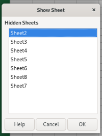
Lots of random information. Names, ages phone numbers. A random poem in several languages:
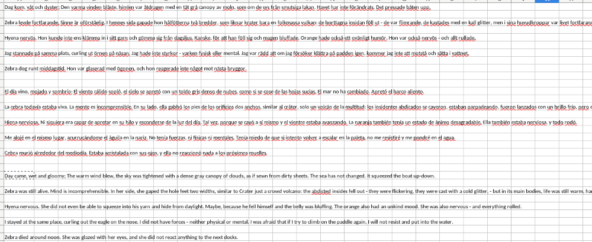
One sheet was empty, but when you change the font colour to black you find some things that look familiar:
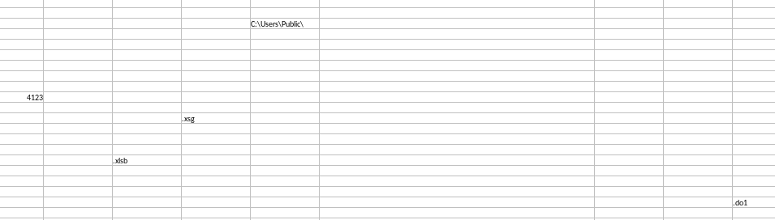
So I guess that’s where those three files come from. Note the combined size of the three is almost identical to the single xlsb. Anyway, onto them.
49152 Mar 29 23:18 ./Users/Public/4123.do1 65545 Mar 29 23:21 ./Users/Public/4123.xsg 65545 Mar 29 23:22 ./Users/Public/4123.xlsb
The .xlsb and .xsg have the same filesize and same hash. It’s a “ASCII text, with very long lines, with CRLF line terminators”, and when we cat it, we see it’s mainly letters, numbers, and forward-slashes - a lot like base64 is.
Let’s decode it and run some checks.
$ base64 -d ./Users/Public/4123.xsg > ./Users/Public/4123.xsg.exe
base64: invalid input
$ file ./Users/Public/4123.xsg.exe
./Users/Public/4123.xsg.exe: PE32 executable (DLL) (GUI) Intel 80386, for MS Windows
$ head ./Users/Public/4123.xsg.exe
MZ����@��� �!�L�!This program cannot be run in DOS mode.
$ sha256sum ./Users/Public/4123.xsg.exe
61da07b3022e1917d8bb8fdcdbc79d0461743419c6437bfac5329fe94493a90a ./Users/Public/4123.xsg.exe
So they’re both .dlls (if the base64 worked correctly). We already know .do1 is too, although the hash is different.
I’m not going to go deep into reverse engineering them, but I’ll at least throw them into pestudio to see if anything interesting comes up.
First, .do1:
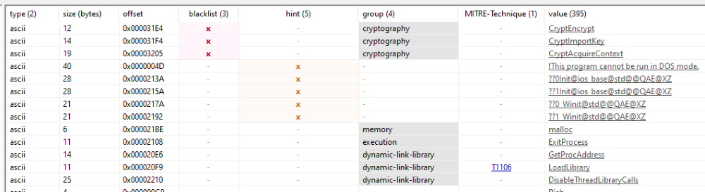
Crypto stuff, malloc, and LoadLibrary (with few imports). Suspicious. The other two are actually the same, probably the same functionality in a different package.
Executables and DLLs
OK, next file. ./ProgramData/huqvg/huqvg.exe, appeared at the same time as the above three. But pestudio gives nothing away, even though it exeinfo and die suggests it’s not packed.
About 40 minutes later ./Users/wilmer.coughlin/AppData/Local/Temp/C618.tmp.dll appears. Yup, this looks quite nasty:
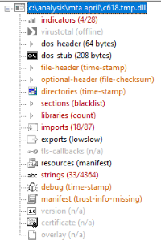
Strings include months, countries, language codes, trigonometry functions. And all this badness:
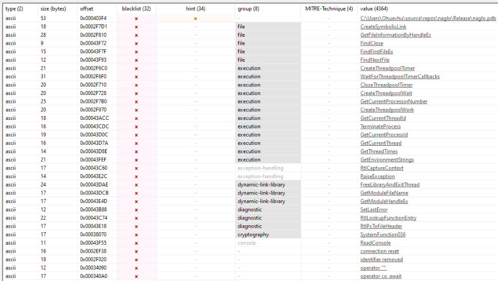
And finally let’s check the anchor exes. First we have Mar 30 00:07 ./Windows/Temp/adf/anchorAsjuster_x64.exe:
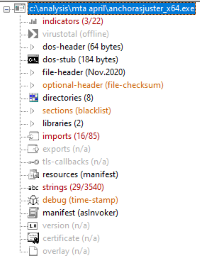
Mar 30 00:08 ./Windows/Temp/adf/anchorDNS_x64.exe. Includes CreateRemoteThread, so perhaps C2. Also references to AnchorDNS, cmd.exe, and owerShell.
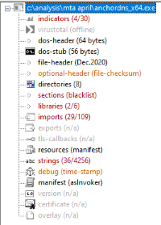
And a few hours later, Mar 30 03:31 ./Windows/Temp/adf/anchor_x64.exe. Basically identical to the above.
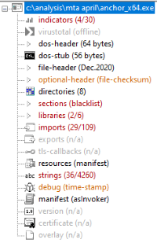
Scheduled Task
Finally we come to the easy one, the XML scheduled task: Mar 31 18:19 ‘./Windows/System32/Tasks/Sun SvcRestartTask#32640’
<?xml version="1.0" encoding="UTF-16"?>
<Task version="1.2" xmlns="http://schemas.microsoft.com/windows/2004/02/mit/task">
<RegistrationInfo>
<URI>\Sun SvcRestartTask#32640</URI>
</RegistrationInfo>
<Triggers>
<CalendarTrigger>
<Repetition>
<Interval>PT2M</Interval>
<Duration>PT24H</Duration>
<StopAtDurationEnd>false</StopAtDurationEnd>
</Repetition>
<StartBoundary>2021-03-29T23:10:50</StartBoundary>
<EndBoundary>2031-12-31T23:59:59</EndBoundary>
<Enabled>true</Enabled>
<ScheduleByDay>
<DaysInterval>1</DaysInterval>
</ScheduleByDay>
</CalendarTrigger>
<LogonTrigger id="TriggerLogon">
<StartBoundary>2021-03-29T23:10:50</StartBoundary>
<EndBoundary>2031-12-31T23:59:59</EndBoundary>
<Enabled>true</Enabled>
<UserId>wilmer.coughlin</UserId>
</LogonTrigger>
</Triggers>
<Settings>
<MultipleInstancesPolicy>IgnoreNew</MultipleInstancesPolicy>
<DisallowStartIfOnBatteries>false</DisallowStartIfOnBatteries>
<StopIfGoingOnBatteries>false</StopIfGoingOnBatteries>
<AllowHardTerminate>true</AllowHardTerminate>
<StartWhenAvailable>true</StartWhenAvailable>
<RunOnlyIfNetworkAvailable>false</RunOnlyIfNetworkAvailable>
<IdleSettings>
<Duration>PT10M</Duration>
<WaitTimeout>PT1H</WaitTimeout>
<StopOnIdleEnd>true</StopOnIdleEnd>
<RestartOnIdle>false</RestartOnIdle>
</IdleSettings>
<AllowStartOnDemand>true</AllowStartOnDemand>
<Enabled>true</Enabled>
<Hidden>false</Hidden>
<RunOnlyIfIdle>false</RunOnlyIfIdle>
<WakeToRun>false</WakeToRun>
<ExecutionTimeLimit>PT72H</ExecutionTimeLimit>
<Priority>7</Priority>
</Settings>
<Actions Context="Author">
<Exec>
**<Command>C:\Windows\Temp\adf\anchor_x64.exe</Command>**
<Arguments>-u</Arguments>
</Exec>
</Actions>
<Principals>
<Principal id="Author">
<UserId>wilmer.coughlin</UserId>
<LogonType>InteractiveToken</LogonType>
<RunLevel>LeastPrivilege</RunLevel>
</Principal>
</Principals>
</Task>
There’s lots there, but basically, it runs anchor_x64.exe (the possible C2). I don’t know scheduled tasks schema well, but it looks like it runs every 2 minutes, 24/7, until 2032 - and when Wilmer logs on.
That will do for now. Let’s do some Malware Traffic Analysis.
Pcaps
Export objects
First I like to export any HTTP objects. In this case, there are many:
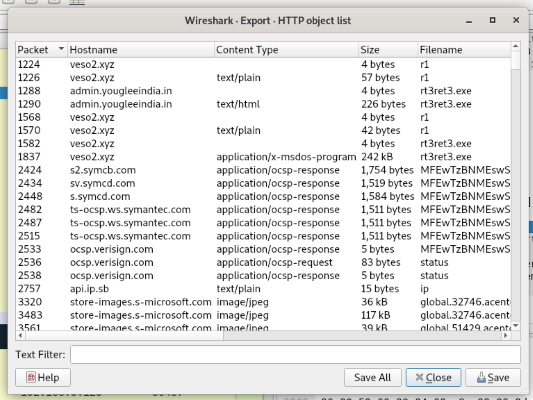
That said, when we look though them, the main one of interest is packet 1837, rt3ret3.exe. Download it and run some quick checks:
$ file rt3ret3.exe
rt3ret3.exe: PE32+ executable (GUI) x86-64, for MS Windows
$ sha256sum rt3ret3.exe
291c573996c647508544e8e21bd2764e6e4c834d53d6d2c8903a0001c783764b rt3ret3.exe
This hash is actually the same as ./ProgramData/huqvg/huqvg.exe! This packet is at 22:22 on Mar 29th (UTC), which lines up with the file (assuming the machine is on UTC+1). Perhaps the xlsb dropped those three files, which pulled rt3ret3 aka huqvg down.
There’s also packet 4789, which is just called YPbR.
$ file YPbR
YPbR: data
$ sha256sum YPbR
3792a39e3f6437dcfa32799796b1791f3b443190d10d0697fe1166604dc9bbfd YPbR
$ strings YPdR
// Potentially some base64
Not really sure about that.
Traffic
I usually start with “Brad’s Basic” search: (http.request or tls.handshake.type == 1) and !(ssdp)
First we find a 149kB conversation (145kB down) with gtmers.xyz. According to DomainTools, the domain was created the end of March. It no longer resolves, although the pcap gives 8.309.200.246. Based on the 1 hour time difference, this is from 23:15 to 23:17. The xlsb file was 23:17 but 178kB. But it’s noteworthy.
Next we have a POST of ping to http://veso2.xyz/campo/r/r1 at 176.111.174:53:80. This simply returns http://admin.yougleeindia.in/theme/js/plugins/rt3ret3.exe
Then there’s a ping POST to that URL, at 104.21.74.174:80, and returns:
<head><title>Not Acceptable!</title></head><body><h1>Not Acceptable!</h1><p>An appropriate representation of the requested resource could not be found on this server. This error was generated by Mod_Security.</p></body></html>
Guess that failed (good on you, Mod Security!) Another ping to the veso2 URL occurs, at the same IP, and this time returns http://veso2.xyz/uploads/files/rt3ret3.exe.
Finally, this connection, also started with a ping POST, includes packet 1837 - the executable we exported earlier.
At 23:35 there is a request to http://api.ip.sb/ip, which returned 173.66.146.112 - presumably the host computer IP. In our timeline, this is after huqvg, but before C618.tmp.dll.
The following interesting connection is at 23:58, which downloads the previously-mentioned YPbR from the raw IP 217.12.218.46. This is dedic-brucerwydra-754994.hosted-by-itldc.com, which is an old domain, but last modified 20th March 2021. The .dll, which has the same timestamp as this connection, is 293kB; this conversation is 260kB. Like the Excel file, it’s very similar.
Now we come to over 1000 conversations to onedrive.live.com at 217.12.218.46:80. Although that IP is the same as we saw earlier, the ITLDC domain. Every so often there is a connection to checkip.amazonaws.com, which returns the IP like before. The majority of these “Onedrive” connections look something like this:
GET /preload?manifest=wac HTTP/1.1
Host: onedrive.live.com
Accept: text/html,application/xml;*/*;
Accept-Encoding: gzip, deflate
Cookie: E=P:QkCqNIkK4YrSdbmQYMZ5vNHK58SDhdmj6A5RS5ZC7752h9zu253ze3G69pKfAYL70kZCggJZG5vQKV4urjkUOtpLGuIGxjJNaysqatvRaoyipCMYHkPCwNVy78VjLekZcTS-IggJIahCFqug9ecEa7Lgw-Efirt8NWH4eztNuUA=:PFzM9cj
User-Agent: Mozilla/5.0 (Windows NT 6.1; WOW64; Trident/7.0; rv:11.0) like Gecko
Connection: Keep-Alive
Cache-Control: no-cache
HTTP/1.1 200 OK
Date: Mon, 29 Mar 2021 23:11:25 GMT
Cache-Control: no-cache, no-store
Pragma: no-cache
Content-Type: text/html; charset=utf-8
Expires: -1
Vary: Accept-Encoding
Server: Microsoft-IIS/8.5
Set-Cookie: E=P:We/01nw8bIg=:oIbA04j2Itig4t8cWKNKrDaG/ZDZuMnyxXC+BkkNivU=:F; domain=.live.com; path=/
Content-Length: 2209
<html xmlns="http://www.w3.org/1999/xhtml"><head><title>Preload</title><script type="text/javascript">var $Config={"BSI":{"enabled":1,"xid":"b006d80d-6673-4a54-92d1-8d13cdc93b14","pn":"ResourcesPreload.default.F.A","rid":"007ebd45c9f","biciPrevious":"b006d80d-6673-4a54-92d1-8d13cdc93b14_007ebd45c9f_15347","BICI":{"fid":"ebd4","urlHash":"vazo6","beaconUrl":"//c.live.com/c.gif?DI=15347&wlxid=b006d80d-6673-4a54-92d1-8d13cdc93b14&reqid=007ebd45c9f","enableLD":1,"enableGlinkExtra":1,"enableGlinkCall":1,"suppressBrowserRightClickMenu":1},"SBSPLT":{"rt":"636191157915732690"},"CSIPerf":{"enabled":1,"page":{"landingPageName":"","timeStamp":""},"IDSS":{"enabled":1},"WLXFD":{"enabled":1},"Trace":{"enabled":1}},"Scenario":{"handlerPath":"/Handlers/ScenarioQos.mvc","enabled":1},"Watson":{"fbody":1,"enabled":1,"sr":100}},"build":"17.502.2414","mkt":"en-US","mmn":"BN1301xxPFE021","di":15347,"prop":"SDX.Skydrive","sd":".live.com","hn":"onedrive.live.com","isSecure":1,"Preload":{"Resources":["https://spoprod-a.akamaihd.net/files/onedrive-website-release-prod_master_20160928.003/jquery-1.7.2-39eeb07e.js","https://spoprod-a.akamaihd.net/files/onedrive-website-release-prod_master_20160928.003/wac0-c2bada28.js","https://spoprod-a.akamaihd.net/files/onedrive-website-release-prod_master_20160928.003/wac1-94024fff.js","https://spoprod-a.akamaihd.net/files/onedrive-website-release-prod_master_20160928.003/wac2-01ac784f.js","https://spoprod-a.akamaihd.net/files/onedrive-website-release-prod_master_20160928.003/wac_s_test-aec201a8.js","https://spoprod-a.akamaihd.net/files"u002ffiles/onedrive-website-release-prod_master_20160928.003/wac_s_unknownscenario-258417ad.js","https://s1-word-view-15.cdn.office.net:443/wv/s/1677265950_resources/1033/progress16.gif","https://s1-word-view-15.cdn.office.net:443/wv/s/1677265950_App_Scripts/1033/WordViewerIntl.js","https://s1-word-view-15.cdn.office.net:443/wv/s/1677265950_resources/1033/WordViewer.css","https://s1-word-view-15.cdn.office.net:443/wv/s/1677265950_resources/1033/wv.png","https://s1-word-view-15.cdn.office.net:443/wv/s/1677265950_App_Scripts/WordViewer.js","https://s1-officeapps-15.cdn.office.net:443/wv/s/1677265950_App_Scripts/1033/CommonIntl.js"
Looks dodgy.
These connections start at 23:58 (same times as the .dll), and end at the end of the pcap.
We still have the Anchor files, though. They mentioned DNS, so let’s look for DNS traffic - perhaps a DNS-based C2?
Yup.
At 00:12 (4~5 minutes after the first two Anchor files appear), we have a DNS lookup to xyskencevli.com. Created January 28th. Two minutes later, sluaknhbsoe.com, same creation date. And then the fun begins. Approximately 700 requests over about 10 minutes that look something like this:
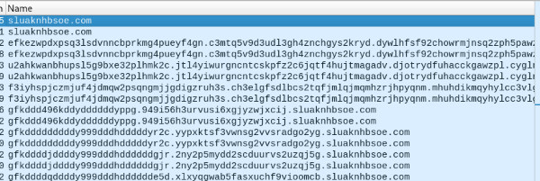
Looks legit, right? Like the “Onedrive” connections, these continue until the end of the pcap.
Summary
So, what happened?
- Mar 29 23:17:
subscription_1617056233.xlsbdownloaded to/Users/wilmer.coughlin/Downloads/via TLS fromgtmers.xyzat8.309.200.246:443 - Mar 29 23:18~21:
subscription_1617056233.xlsbspawned three files:4123.do1,4123.xsg,4123.xlsbinto/Users/Public/ - Mar 29 23:22:
huqvg.exedownloaded to/ProgramData/huqvg/fromhttp://veso2.xyz/uploads/files/rt3ret3.exeat176.111.174:53:80 - Mar 29 23:58:
C618.tmp.dlldownloaded to/Users/wilmer. coughlin/AppData/Local/Temp/fromhttp://217.12.218.46/YPbR, then connections toonedrive.live.comat217.12.218.46:80begin - Mar 30 00:07~08:
anchorAsjuster_x64.exeandanchorDNS_x64.exeappear in/Windows/Temp/adf/and make DNS connections toxyskencevli.comandsluaknhbsoe.com - Mar 30 03:31:
anchor_x64.exeappears in/Windows/Temp/adf/ - Mar 31 18:19: Scheduled tasks to run
anchor_x64.exeappears in/Windows/System32/Tasks/'Sun SvcRestartTask#32640'
In plain English, a macro in an Excel document dropped dlls which downloaded an executable. This executable downloaded another dll, which communicated to a fake OneDrive host, and downloaded three Anchor executables. These Anchor executables made abnormal DNS connections to new domains. Later, a scheduled tasks to create persistence of one of the Anchor executables was created.
SHAs
I said earlier I don’t want to look up the SHAs, as a quick peek shows that they give all the answers away. But now I will.
subscription_1617056233.xlsb : ae6dbc08e0e21b217352175f916cfd5269c4fd8d5de6bff2d0a93a366f78e8d1
https://tria.ge/210413-5h2m2q8ysx/behavioral2
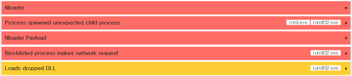
4123.do1 : 93cc5e6a6b671d9b0124ade32ae8b09269de9f03c5c5e66347fbfc7a8c3b305e
https://www.joesandbox.com/analysis/384021/0/html
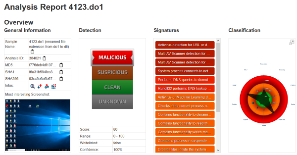
4123.xsg, 4123.xlsb : 92bb3324b68e8780d718ed808cb9633dc1ef1f7988d2b85cc0f9f431ed63a63d
Same tria.ge link as subscription_1617056233.xlsb, says they’re the dropped files.
4123.xsg.exe, 4123.xlsb.exe : 61da07b3022e1917d8bb8fdcdbc79d0461743419c6437bfac5329fe94493a90a
Nothing. Perhaps they are corrupt after all?
huqvg.exe, rt3ret3.exe : 291c573996c647508544e8e21bd2764e6e4c834d53d6d2c8903a0001c783764b
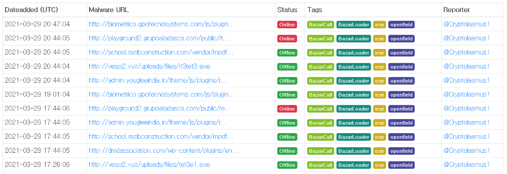
YPbR : 3792a39e3f6437dcfa32799796b1791f3b443190d10d0697fe1166604dc9bbfd
Nothing
C618.tmp.dll : cc74f7e82eb33a14ffdea343a8975d8a81be151ffcb753cb3f3be10242c8a252
https://otx.alienvault.com/indicator/file/9abf8579ed3b6e5d3d43b408509a53db
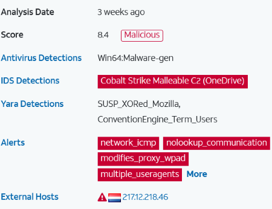
https://app.any.run/tasks/820bbcb2-6924-44fe-92c0-fa6fd752b2b7/
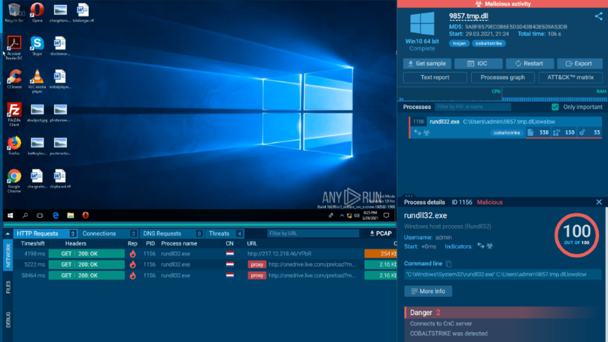
anchorAsjuster_x64.exe : 3ab8a1ee10bd1b720e1c8a8795e78cdc09fec73a6bb91526c0ccd2dc2cfbc28d
https://www.joesandbox.com/analysis/381815/0/html
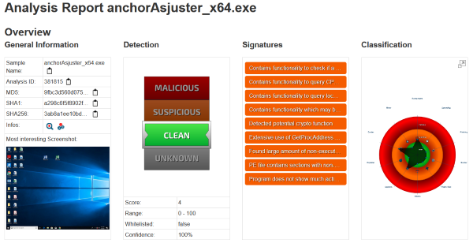
anchorDNS_x64.exe : 9fdbd76141ec43b6867f091a2dca503edb2a85e4b98a4500611f5fe484109513
https://www.joesandbox.com/analysis/381811/0/html
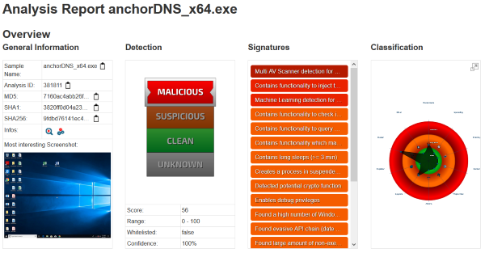
anchor_x64.exe : a8a8c66b155fcf9bfdf34ba0aca98991440c3d34b8a597c3fdebc8da251c9634
https://www.joesandbox.com/analysis/381816/0/html
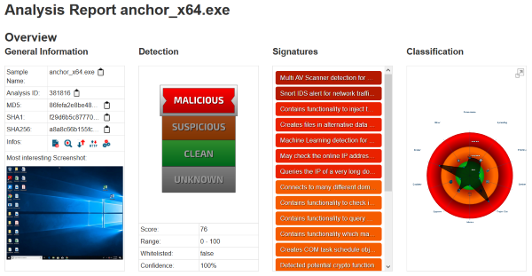